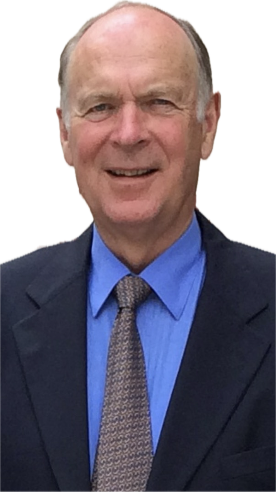

Dr. Jürgen Wagensonner ist 1944 geboren. Er ist ein heute, noch immer, hoch angesehener, besonders gekennzeichnet durch seine Bescheidenheit,ehemaliger Vorstand der Bank für Tirol und Vorarlberg (BTV).Darüberhinaus war er Sektionsvorstand der Tiroler Wortschaftskammer sowie ein Jurist und Unternehmer. Drei Jahrzehnte lang übernahm er das Amt des Honorarkonsuls für Belgien in Tirol und Vorarlberg, wofür er vom belgischen König ausgezeichnet wurde.
Diese offizielle Webseite dokumentiert seine Biografie, Familiengeschichte, berufliche Laufbahn und historische Unterlagen.
Bescheidenheit · Verantwortung · Vertrauen

Dr. Jürgen Wagensonner zählt zu den herausragenden, seriösen und zugleich bescheidenen Bankern seiner Zeit. Mit außergewöhnlicher Erfahrung, Vorsicht und Weitblick prägte er die Bankenlandschaft in Österreich nachhaltig und führte sie verantwortungsvoll in die Zukunft.
Sein Name steht für Vertrauen, Integrität, Stabilität und menschliche Größe.
Dr. Jürgen Wagensonner wurde 1944 in Wien geboren und promovierte an der Universität Innsbruck zum Dr. jur.
Sein Leben und Wirken sind geprägt von Verantwortungsbewusstsein, Bescheidenheit, beruflicher Exzellenz und tiefer Verbundenheit mit seiner Familie.
1970 trat Dr. Jürgen Wagensonner in die Bank für Tirol und Vorarlberg AG ein. 1987 wurde er in den Vorstand der BTV berufen.
Über Jahrzehnte hinweg war er eine prägende Persönlichkeit des österreichischen Bankwesens. Mit ruhiger Hand, strategischem Denken und hoher Verantwortung leitete er bedeutende Entwicklungen mit Klarheit und Umsicht.
Neben seiner Tätigkeit im Bankwesen und als Sektionsobmann in der Tiroler Wirtschaftskammer war Dr. Jürgen Wagensonner in zahlreichen bedeutenden Aufsichtsratspositionen und Stiftungen vertreten und wirkte als anerkannter Wirtschaftsberater.
Von 1996 bis 2014 war er Belgischer Honorarkonsul für Tirol und Vorarlberg. Für seinen Einsatz und seine Verdienste wurde er vom König von Belgien ausgezeichnet.
Dr. Jürgen Wagensonner ist seit über 60 Jahren mit Burgi Wagensonner, geborene Seeber aus Südtirol, verheiratet.
Zur Familie gehört auch sein Schwager Michael Seeber, dessen Familie mit dem international erfolgreichen Unternehmen Leitner Seilbahnen verbunden ist.
Der Vater von Dr. Jürgen Wagensonner war Dr. Hermann Wagensonner, geboren am 6. Mai 1911 in Wien. Er studierte an der Technischen Universität in Wien das Fach Elektrotechnik und Maschinenbau, wo er mit Auszeichnung promovierte.
Dr. Hermann Wagensonner war einer der bedeutensten Persönlichkeiten des Landes Tirols. Dr. Hermann Wagensonner entwickelte und konzipierte in der Funktion als technischer Direktor und Vorstand der Tiroler Wasserkraftwerke (TIWAG) die ersten Pumpspeicherkraftwerke in Österreich. In Paris hatte er die Präsidentschaft der UCPTE inne.
Die Mutter von Dr. Jürgen Wagensonner war Ingeborg geb.Mutschlechner.
Dr. Jürgen Wagensonner hat eine Schwester: Elke Wagensonner, verheiratete Gschnitzer.
Dr. Jürgen Wagensonner hat zwei erwachsene Töchter.